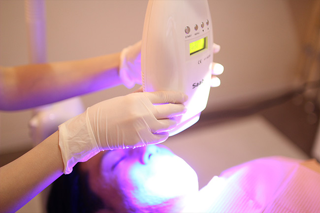

口元の美しさは笑顔につながります
～ホワイトニング・デンタルエステ～
口元にコンプレックスを抱えたままだと大きく口を開けて笑えないなど、精神的な苦痛にもつながります。ご自宅でのケアで満足のいく結果を得られない場合は、三島駅・下土狩駅の近くの歯医者「MI総合歯科クリニック」までご相談ください。お口まわりの状況やご要望をふまえ、さまざまなデンタルエステをご提案します。天然歯を薬剤で白くするホワイトニングにも対応します。
あなたの歯を薬剤で白くします～ホワイトニング～
ホワイトニングは歯を削ることなく、白さと美しさを実現する方法です。目的に合わせて、歯の白さを調整できます。ホワイトニングには種類がありますので、詳しくはご相談ください。人前でお話をする機会が多いお仕事などに就かれている方におすすめです。
まずお口の健康チェックを
ホワイトニングを行う前には、先に口腔内のチェックを行います。小さな虫歯や歯周病の初期症状などが見られる場合には、これらの治療が優先です。口腔内にトラブルを抱えたままでは、せっかく歯を美しくしても問題が発生する可能性があるからです。また、虫歯や歯周病を放置し、悪化させてしまうと”抜歯”という事態につながりかねません。美しい口元をつくるためには、まず健康な口腔内を維持することからはじめましょう。
ピックアップ
プラークコントロールでホワイトニング前の準備を
ホワイトニングを検討されている場合、まずはご自宅でのプラークコントロールからはじめましょう。丁寧なブラッシングはもちろんのこと、歯間ブラシやデンタルフロスなども使い、プラーク（歯垢）をしっかり管理（コントロール）し、お口の中を清潔に保つことが大切です。また、ご自宅では取り切れないプラークは、歯医者でのクリーニング（PMTC）で落としましょう。ご自宅と歯医者でしっかりと口腔内の健康を維持し、ホワイトニングの準備を整えてください。
歯を白くしたあとのメインテナンス
歯を白くしたあとのメインテナンス
ホワイトニングは、一度だけではその白さを維持できません。継続して美しい状態を保ってください。また、お口の健康を守るために、定期検診やメインテナンスも積極的にご利用ください。セラミックなどを使ったメタルフリー治療も同様です。せっかく白く美しい審美素材を使っても、ケアを怠れば問題が発生することもあります。ホワイトニングやメタルフリー治療は一時的ではなく、継続的に実施し、メインテナンスしましょう。
ホワイトニングの注意点

ホワイトニングの効果には個人差があります。またホワイトニングの種類によっても効果を実感するまでの期間が異なり、色の変化も異なります。まずはお気軽にご相談ください。丁寧なカウンセリングを行い、注意点を詳しくお伝えします。
口元に健康美を～デンタルエステメニュー～
ガムピーリング
タバコのヤニなどによって黒ずんでしまった歯ぐきを健康なピンク色に戻すのがガムピーリングです。歯肉用のホワイトニングとお考えください。歯のホワイトニングを行ったあとで、今度は歯ぐきの黒ずみが気になってきたという方におすすめです。
ガムマッサージ
歯ぐき全体のマッサージで、全身と関連するお口の中のツボを刺激し、さまざまな効果を促すのがガムマッサージです。咀嚼筋がほぐされ、頭がすっきりし、さらには血行や唾液分泌も促されます。全身の筋肉をリラックスさせる効果もあります。
リップエステ
唇のトリートメント方法です。血行がよくなるので”くすみ”の解消はもちろん、口角があがり、ぷっくりボリュームのあるつややかな唇が手に入ります。古い角質が取り除かれますので、乾燥や割れなどにお悩みの方におすすめです。
料金表
ホワイトニング
| 初回ホームホワイトニング（片顎） | 15,000円 | |
|---|---|---|
| 追加トレーのみ | 5,000円 | |
| 追加ジェル | 1,500円 | |
| オフィスホワイトニング | 片顎6本 | 24,000円 |
| 片顎10本 | 40,000円 | |
| 上下顎12本 | 45,000円 | |
| 上下顎20本 | 50,000円 | |
| オフィスホワイトニング（1回1歯） | 4,000円 | |
| デュアルホワイトニング | ホームホワイトニング片顎 | 10,000円 ＋オフィスホワイトニング |
| ホームホワイトニング上下顎 | 20,000円 ＋オフィスホワイトニング |
|
※表示価格はすべて税抜き価格
そのほか
| ガムマッサージ | 3,000円 |
|---|---|
| リップエステ | 3,000円 |
| ガムピーリング（片顎） | 15,000円 |
※表示価格はすべて税抜き価格